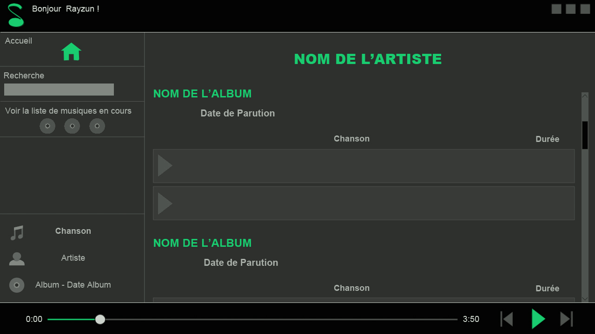

SpotiDut

Description du projet
J'ai réalisé ce projet lors de ma 2e année de DUT Informatique en collaboration avec 4 autres camarades. L'objectif de ce projet était de recréer un serveur de streaming musical type Spotify mais devant tourner sur Raspberry Pi. Nous avons également dû créer les clients permettant d'écouter les musiques. Nous avons ainsi réalisé un client Windows, Linux et Mac.
Note
17/20
Compétences développées
Durant ce projet, j'étais UI Designer. J'ai donc réalisé les maquettes de l'application et les éléments graphiques avant de créer l'interface en Java. Afin de faciliter le développement, j'ai utilisé l'IDE NetBeans. J'ai également appris comment créer un serveur, comment gérer le multi-threads, les notifications...